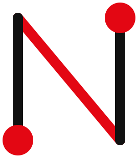
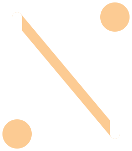

Criação de sites
Sob medida, desenhados primeiro para o celular, com fotos reais e experiência visual quando o produto pede.

Um site com fotos reais do doce, em que a textura, o brilho e o fio aparecem antes de qualquer palavra — e levam direto ao pedido, no varejo e no atacado.
Criamos sites sob medida para marcas cujo produto é melhor do que a internet mostra. Começamos pelo site, porque é ali que a marca é vista e o pedido acontece, e organizamos a operação que sustenta ele.
Sob medida, desenhados primeiro para o celular, com fotos reais e experiência visual quando o produto pede.
Pedidos, avisos e confirmações que acontecem sozinhos.
Produção, estoque e entregas fáceis de acompanhar.
Ferramentas internas quando a planilha não dá mais conta.
Doce de leite é desejo. E desejo começa pelo olhar.

02Vermelho, mascote e o bordão "Doce de leite se chama assim".
A Tia Gaúcha aproxima a marca e conta a origem gaúcha.
Torradas, bolos e frutas mostram o doce aplicado, não só o pote.
Não localizamos link na bio. Quem fica com vontade não tem para onde ir.
Mercados e confeitarias não encontram como pedir lotes.
As receitas ficam espalhadas entre publicações e destaques.
Em vez de imagens montadas, o site mostra o doce de verdade: o pote da Mu-Mu, a colher levantando o doce e a textura ocupando a tela inteira.
O produto real entra em cena, com a colher levantando o doce.
A Tia Gaúcha e as receitas mostram o doce em uso, do jeito que o cliente vai comer.
Brilho e cremosidade em tela cheia, no ponto em que a vontade aparece.

04Cremoso, brilhante e do jeito que a vó fazia.
As receitas da Tia Gaúcha viram acervo, e cada uma leva ao pote certo.
Prazo e valor por região, integrados aos Correios e às transportadoras que vocês já usam.
Entrega local, retirada na fábrica e frete grátis a partir de um valor definido por vocês.
Quem está com vontade fecha a compra sem precisar perguntar quanto fica.
| ITEM | PEDIDO MÍNIMO | PREÇO POR POTE | ENTREGA |
|---|---|---|---|
| Caixa 12 potes | 2 caixas | R$ 9,90 | 5 dias úteis |
| Caixa 24 potes | 4 caixas | R$ 8,90 | 7 dias úteis |
| Balde confeitaria | 5 baldes | sob consulta | 10 dias úteis |
Sabores com foto, sacola, frete por CEP e pagamento online.
Cadastro com CNPJ para mercados, padarias e confeitarias, com tabela por quantidade e orçamento.
O doce de verdade, em fotos e vídeos do produto e das receitas, com uma primeira tela de impacto. A parte que faz o cliente parar e olhar.
Valor e prazo na hora, com as regras de entrega de vocês.
Sacola, Pix e cartão para quem compra o pote.
Cadastro de empresas, lotes, pedido mínimo e orçamento.
Os vídeos da Tia Gaúcha viram acervo, cada receita levando ao pote.
Preço por quantidade ou tipo de cliente, fácil de atualizar.
Varejo e atacado no mesmo lugar, com avisos automáticos.
Entendemos os sabores, o varejo, o atacado e as entregas.
Escopo e valores sob medida, com o site em primeiro lugar.
Fotos reais do pote, layout e funções, revisados com vocês.
Publicamos, e o link da bio passa a vender.
Um site bonito de ver e simples de comprar, que funciona bem no celular e no computador.
Número de vendas ou posição no Google. Preferimos combinar o que depende de nós.